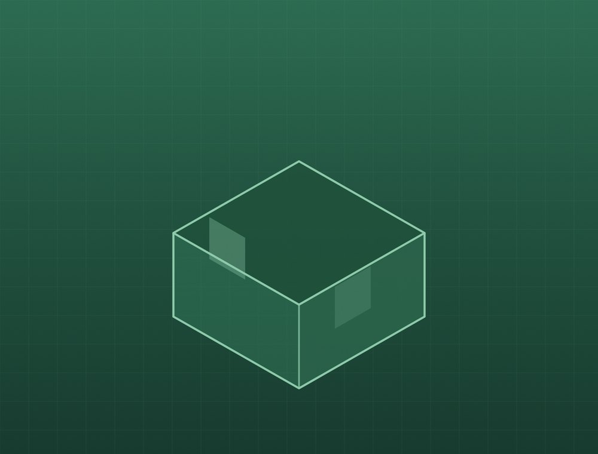
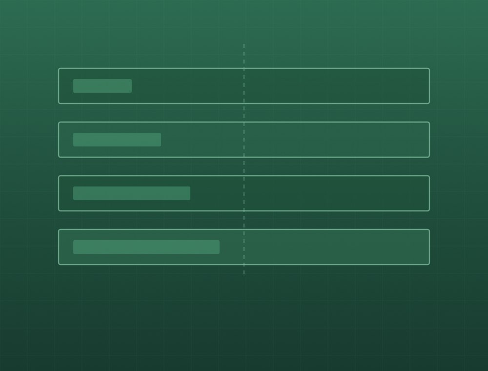
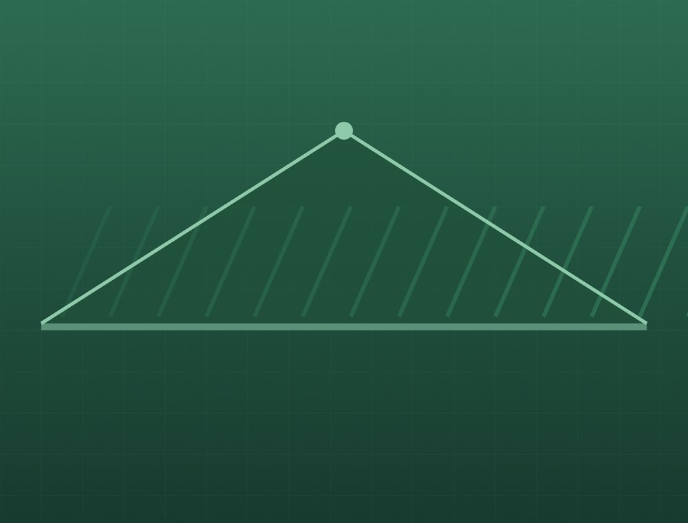
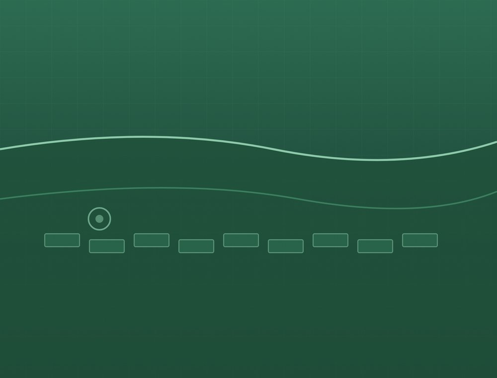

Mitä teemme
Neljä palvelukokonaisuutta. Kaikki voidaan tehdä joko erillisenä työnä tai osana kokonaisurakkaa.
Huomio: keltaisella merkityt kohdat ovat paikanvaraajia. Ne täytetään yrityksen omilla tiedoilla ennen julkaisua — mitään yhteystietoa, vuosilukua tai lupanumeroa ei ole keksitty.
Uudisrakentaminen

Rakennamme omakotitalot ja vapaa-ajan asunnot perustuksista valmiiseen taloon. Hoidamme rungon, vesikaton, ulkoverhouksen ja sisätyöt sekä sovitamme yhteen sähkö-, LVI- ja muiden erikoisurakoitsijoiden työt.
- Perustukset ja maanrakennustyöt
- Runko ja vesikatto
- Ulkoverhous ja ikkuna-asennukset
- Sisätyöt ja pintakäsittelyt
- Aliurakoitsijoiden koordinointi
Saneeraus ja peruskorjaus

Vanhan rakennuksen korjaaminen vaatii sen lukemista ennen kuin siihen kosketaan. Käymme kohteen läpi ennen tarjousta, jotta tiedämme mitä pintojen alla on.
- Keittiö- ja kylpyhuoneremontit
- Koko asunnon peruskorjaukset
- Väliseinämuutokset ja tilamuutokset
- Lattia- ja seinärakenteiden korjaukset
- Vanhojen rakennusten korjaus
Julkisivut ja kattotyöt

Rakennuksen vaippa on se, mikä pitää sään ulkona. Uusimme ulkoverhoukset ja katteet sekä korjaamme vauriot ennen kuin ne pääsevät rakenteisiin.
- Ulkoverhouksen uusiminen
- Katteen vaihto
- Räystäät ja sadevesijärjestelmät
- Julkisivun maalaus ja huoltotyöt
Piha- ja maanrakennus

Pihatyöt tehdään samalla sopimuksella kuin talo, jos niin halutaan. Silloin pohjatyöt ja rakennus sovitetaan yhteen.
- Terassit ja katokset
- Kiveykset ja pihalaatoitukset
- Salaojat ja sadevesien ohjaus
- Pohjatyöt ja maansiirto
Kysymyksiä
Saanko kirjallisen tarjouksen?
Kyllä. Tarjouksessa eritellään työn laajuus, mitä hintaan kuuluu ja mitä ei. Suullinen arvio ei ole tarjous.
Voiko työstä saada kotitalousvähennystä?
Remontti- ja korjaustyön työosuudesta voi tietyin edellytyksin saada kotitalousvähennystä. Uudisrakentaminen ei oikeuta vähennykseen. Voimassa olevat ehdot ja enimmäismäärät löytyvät osoitteesta vero.fi.
Kuka hoitaa luvat?
Rakennusluvan hakee rakennuttaja eli tilaaja, mutta autamme hakemuksen valmistelussa ja tarvittavien liitteiden kokoamisessa. Lupaehdot vahvistaa aina kunnan rakennusvalvonta.
Teettekö myös pieniä töitä?
Kysy. Se riippuu työtilanteesta ja kohteen sijainnista. Sanomme suoraan, jos työ ei ole meille sopiva.
Kerro mitä olet suunnittelemassa
Soita tai lähetä tarjouspyyntö. Käydään kohde läpi ja katsotaan, miten se kannattaa toteuttaa.